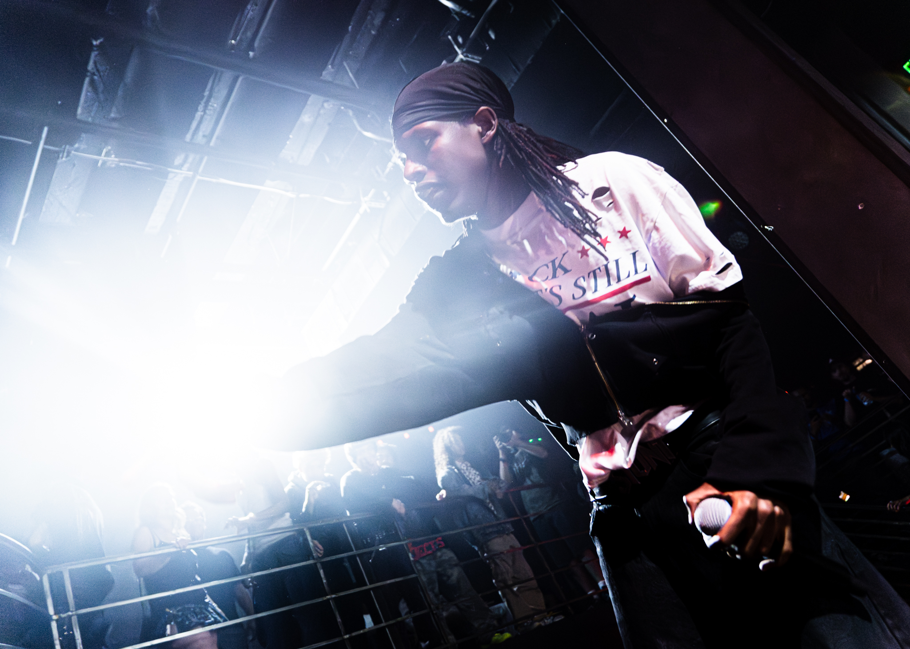
Stage light, motion blur, and the half-second before the shutter closes. A working archive of live performance, sport, and staged nocturnes.
Most of what's here happens in low light and fast motion — a mic swung overhead, a crowd's flare, a body mid-fall. The five rolls below aren't chronological, they're grouped by the kind of dark they were shot in.
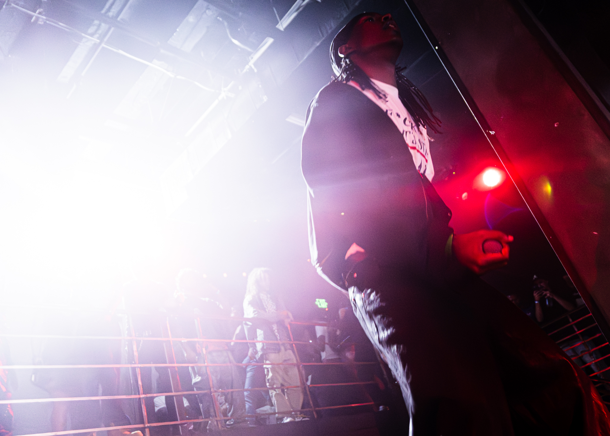
BWhite flare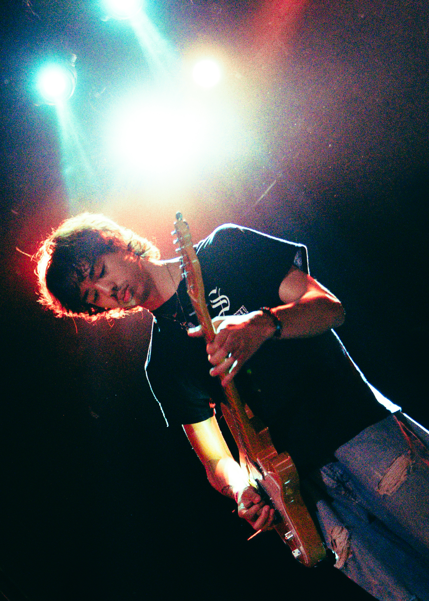
CBlue / red wash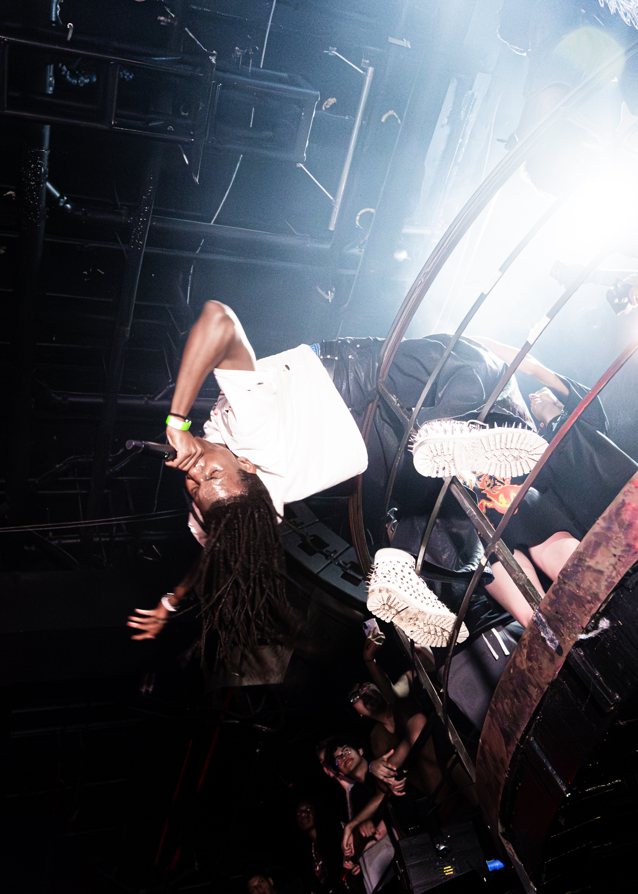
DMid-air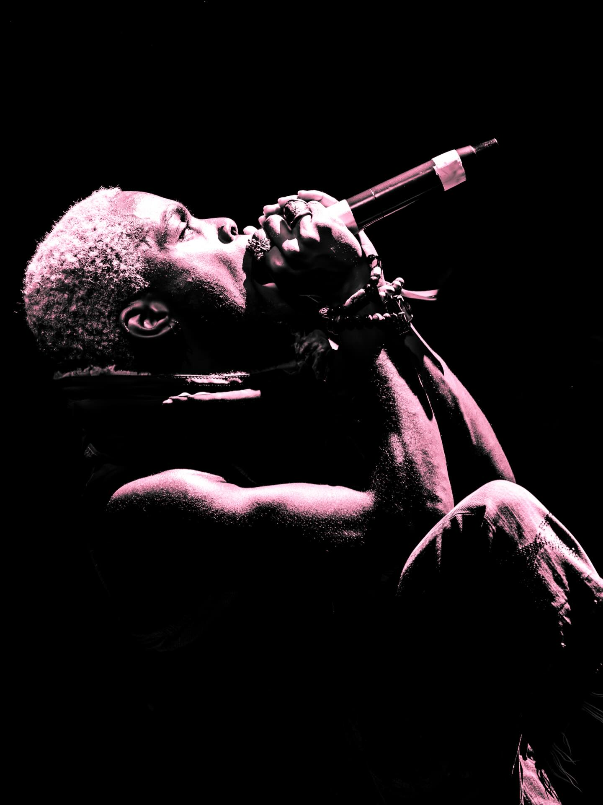
Head back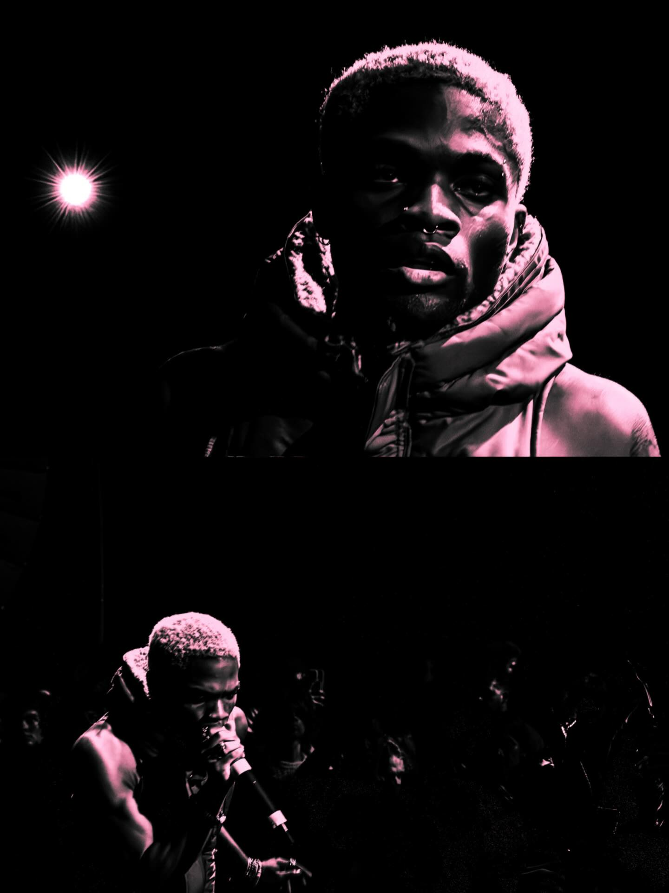
Diptych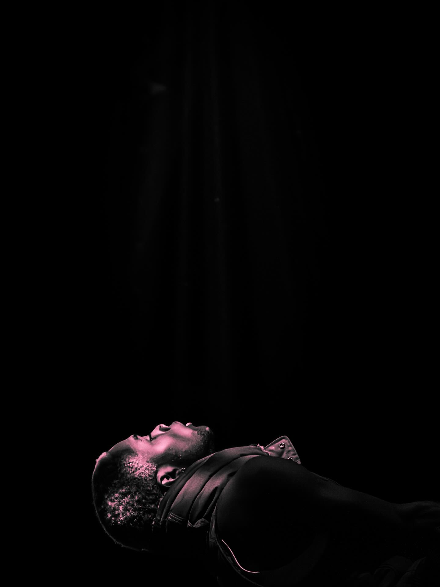
Falling back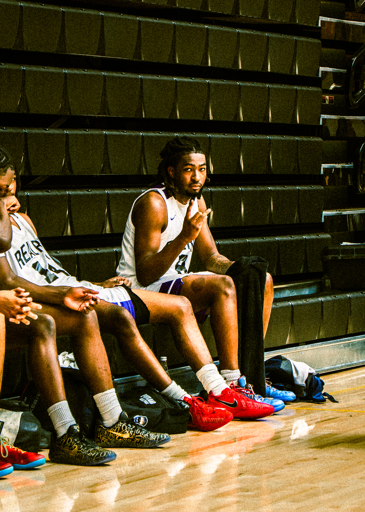
Bench, timeout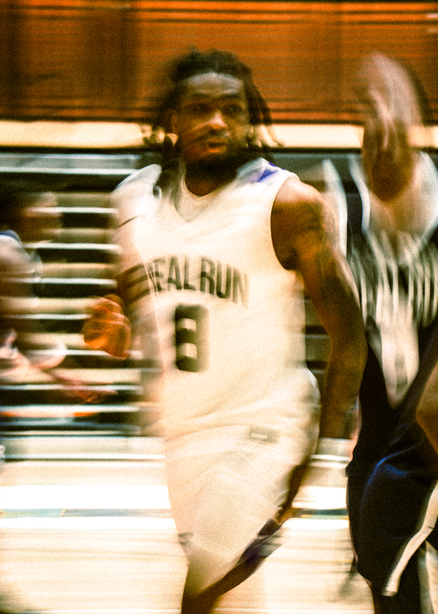
Long exposure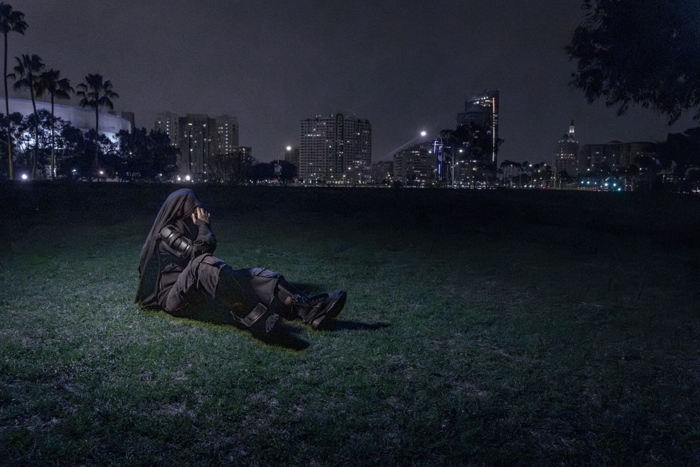
Park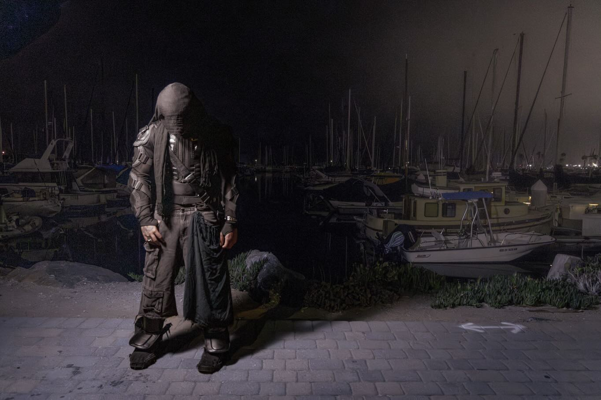
Marina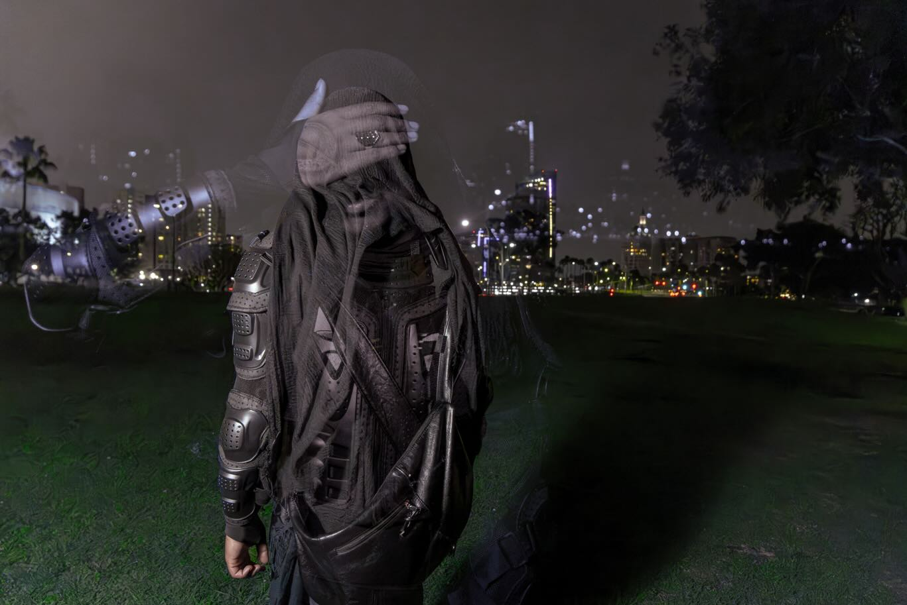
Skyline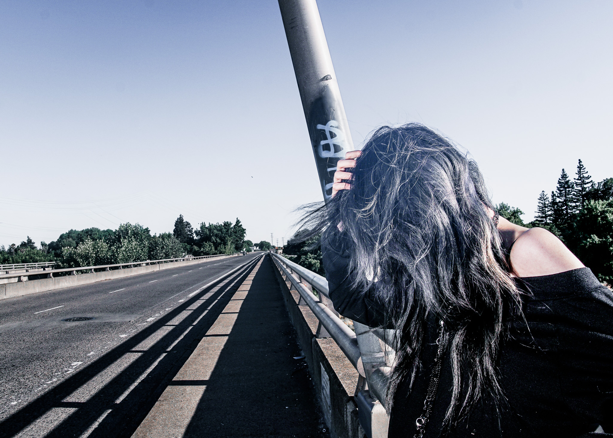
Bridge, midday wind.